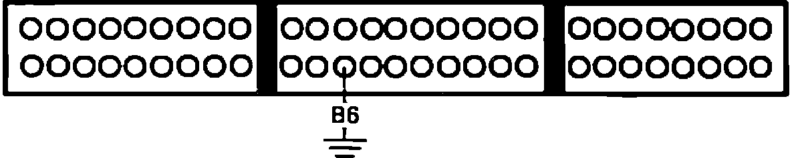
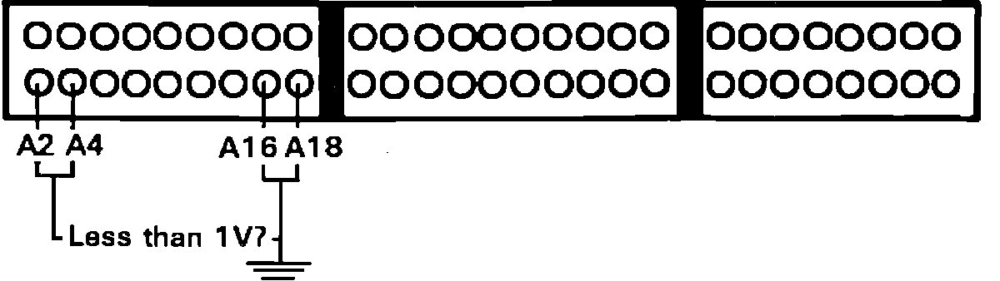

Check Engine Light Not on For 2 Seconds After Ignition on
1. With ignition on, oil pressure warning light should be lit (the oil warning light and check engine light receive power from the same circuit, this ensures power is available to the check engine light). If OK proceed to step 3, if not OK continue.
2. Inspect fuse No. 5 in underdash fuse box (turn signals & back-up lights). Replace fuse if defective. If fuse is good, check for open circuit between No. 5 fuse and instrument panel. End of test.
ECU Testing:

3. Connect test harness between harness and ECU, refer to TEST HARNESS INSTALLATION. If test harness is not available, carefully backprobe wires at ECU connector.
4. Connect ECU terminal B6 to ground and observe check engine light.
Light on, proceed to step 6.
Light off, proceed to next step.
5. Check and replace warning light bulb if necessary, if bulb checks good repair open circuit in BLU wire between ECU terminal B6 and instrument cluster. End of test.
ECU Testing:

6. Test voltages individually between ECU pins A2, A4, A16 and A18 and ground.
1 volt or above, proceed next step.
Less then 1 volt, proceed to step 8.
7. Repair open in wire(s) that read over 1 volt, between ECU and ground. End of test.
8. Replace electronic control unit.